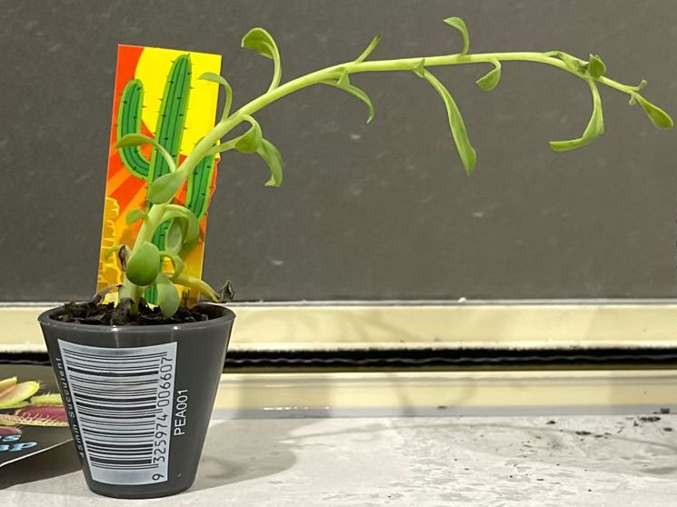

niedobór światła
Co widzisz
Bladość, wydłużone międzywęźla, powolny wzrost, pędy wyginają się w stronę okna.
Co to jest
Zbyt mało światła do utrzymania zwartego pokroju i prawidłowej barwy.
Czy to problem?
Tak — osłabia roślinę i zwiększa podatność na inne kłopoty.
Możliwe przyczyny
- Stanowisko daleko od okna, północna ekspozycja.
- Zasłonięte szyby, krótki dzień zimą.
Jak potwierdzić
Przeniesienie na jaśniejsze miejsce poprawia wygląd w 2–4 tygodnie. Aplikacja-luksomierz pokaże bardzo niskie wartości.
Co zrobić teraz
- Przenieś bliżej okna (wschód/południowy-wschód) lub doświetlaj 10–12 h/dobę.
- Obracaj donicę co 1–2 tygodnie.
- Ogranicz nawożenie do czasu poprawy światła.
Jak zapobiegać
Zaplanowane stanowiska na zimę, mycie szyb, unikanie głębokich półek bez doświetlania.
Zdjęcia
